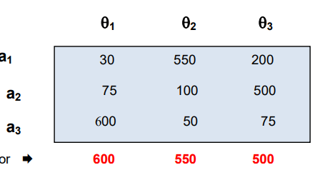
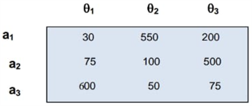
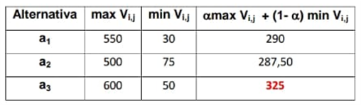

Maximin

Fue propuesto por Abraham Wald, un notable matemático húngaro, nacido en 1902. Doctorado en la Universidad de Viena tuvo que trasladarse a los Estados Unidos por su origen judío en la década de los 30, trabajando durante la Segunda Guerra Mundial para el Grupo de Investigación Estadística (SRG) del Ejército de los Estados Unidos.
Este criterio se lo conoce también con el nombre “del mal perdedor”, porque escoge lo mejor de lo peor, es decir, elige una alternativa cuya peor consecuencia sea tan buena como la peor consecuencia de cada alternativa. Supone que la naturaleza es malevolente y consecuentemente debe elegirse el menor valor de cada alternativa y de estos valores el mayor de ellos. Para el ejemplo planteado, se escoge la segunda alternativa, puesto que es el mayor valor entre 30,75 y 50 que corresponden a los menores de cada fila o alternativa planteada.

En términos matemáticos se expresa como max { min ( vi,j ) }ai j
En ocasiones, el criterio de Wald puede conducir a decisiones poco adecuadas. Por ejemplo, considérese la siguiente tabla de decisión, en la que se muestran los niveles de seguridad de las diferentes alternativas.

Maximax
Es un criterio “super” optimista, por ello, que también se lo conoce como “ el mundo me sonríe “ propio de decisionistas temerarios. Se escogen por fila los mayores valores y de ellos, el mayor. En el ejemplo debe escogerse la alternativa tercera, según se observa a continuación en el vector Si.

El planteamiento matemático se expresa como max { max ( vi,j ) }
Minimax
Desarrollado por Leonard Jimmie Savage, conocido también en inglés como “Minimax regret” (minimax del arrepentimiento) y se basa en la ocurrencia posterior como consecuencia de acciones a priori.

Este criterio inicialmente requiere de la construcción de una matriz de pesar o deploración y posteriormente la aplicación del criterio minimax para elegir una estrategia. La matriz de pesar o arrepentimiento reemplaza los vi,j por ri,j, que se define como:
max {vi,j } – vi,j , si v es beneficio.
ri,j =
vi,j - min { vi,j }, si v es pérdida.
Para el ejemplo, se construye la matriz de deploración con la primera alternativa, puesto que los elementos de la matriz de pago son de beneficio. Sea la matriz

Entonces la matriz de deploración se construye restando los vij con los mayores valores de cada columna. De esta matriz, se determinan los mayores valores por fila, generándose el vector Si de resultados.

Aplicando el concepto del minimax, entonces la mejor alternativa a seguir es la tercera.

Hurvicz
Criterio de Hurwicz. Fue desarrollado por Leonid Hurwicz, matemático y economista de origen polaco, nacionalizado en los Estados Unidos. Fue profesor emérito de la Universidad de Minnesota, uno de los primeros matemáticos economistas en reconocer el valor de la Teoría de Juegos y pionero en su aplicación. Por sus estudios sobre el mecanismo óptimo para alcanzar al mismo tiempo objetivos diferentes, como el bienestar social y ganancias privadas, fue laureado con el Premio del Banco de Suecia en Ciencias Económicas en memoria de Alfred Nobel en 2007 junto con los economistas Eric S. Maskin y Roger B. Myerson.

El criterio establece un equilibrio entre los criterios maxmax y maxmin, es decir entre el optimisma y el pesimista extremos. Para ello, introduce un coeficiente de optimismo que es evaluado por el decisionista en función de su estado de ánimo entre valores de [0,1], de acuerdo a las siguientes relaciones
max { max vi,j + ( 1 - ) min vi,j } Cuando se representa beneficio.
min { min vi,j + ( 1 - ) max vi,j } Cuando se representa costo.
Si = 1, entonces el criterio es en extremo optimista; si = 0, el decisionista toma un criterio demasiado pesimista.

Para desarrollar este criterio, se obtienen los máximos y mínimos valores por alternativa, aplicándolos de acuerdo al coeficiente de optimismo del decisionista. Para determinar la alternativa a seguir en el ejemplo, se tomará un coeficiente = ½ y la primera relación por tratarse de beneficio.

Laplace
Laplace también trabajó en la Teoría de la Probabilidad, y en particular dedujo el método de los mínimos cuadrados. Su "Théorie Analitique des Probabilités" se publicó en 1812, bajo el auspicio de Napoleón Bonaparte. El concepto aplicado para la determinación de la mejor alternativa, es el valor esperado y para ello, debe multiplicarse cada elemento de la fila por su probabilidad asociada. La expresión matemática para este criterio se formula en los siguientes términos.
máx { 1/n x vi,j } En caso de ganancia. i j=1
Donde p = 1/n. n = número de columnas
Para el ejemplo que se sigue, el valor máximo esperado se calcula de la siguiente manera: p = 1/n = 1/3
E(G) = 1/3 x 30 + 1/3 x 550 + 1/3 x 200 = 260 Alternativa
E(G) = 1/3 x 75 + 1/3 x 100 + 1/3 x 500 = 225
E(G) = 1/3 x 600 + 1/3 x 50 + 1/3 x 75 = 241,67